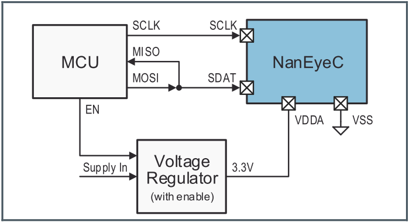
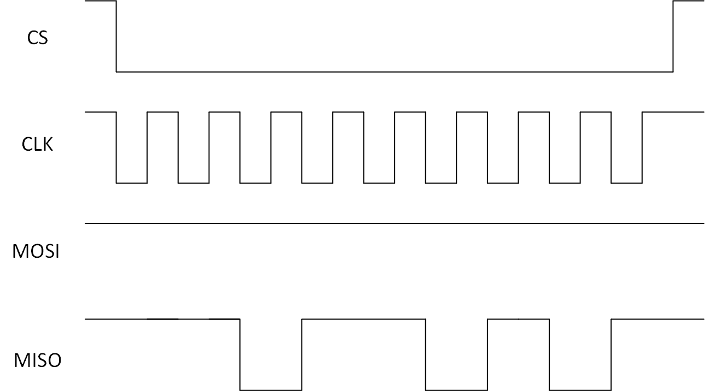

SPI使用参考
1. 概述¶
SPI是一个同步串行接口，可以连接各种外部设备。MSPI（Master SPI）在FIFO mode下支持全双工读写，DMA模式下支持半双工读写；支持Motorola SPI兼容时序（CPHA / CPOL）；8字节读写缓冲区（FIFO mode）；字节传输1bit到15bit可配置位宽度。
2. 驱动配置¶
| MSPI Group | DMA | FIFO | Full-duplex |
|---|---|---|---|
| MSPI group0 | Support | Support | Support |
当前平台提供1组HW MSPI，支持DMA和FIFO mode。
1. spi0@0 {
2. compatible = "sstar,mspi";
3. mspi-group = <0>;
4. #ifdef CONFIG_CAM_CLK
5. camclk = <CAMCLK_mspi0>;
6. #else
7. clocks = <&CLK_mspi0>;
8. #endif
9. reg = <0x1F222000 0x200>;
10. interrupts = <GIC_SPI INT_IRQ_MSPI_0 IRQ_TYPE_LEVEL_HIGH>;
11. use_dma = <0>;
12. status = "ok";
13. };
SPI master驱动中支持配置的属性：
| 属性 | 描述 | 备注 |
|---|---|---|
| compatible | 用于匹配驱动进行驱动注册，需与代码中一致 | 禁止修改 |
| reg | 用于指定SPI寄存器bank的地址 | 不需要修改 |
| interrupts | 用于指定使用的硬件中断号及属性 | 不需要更改 |
| clocks | 用于指定使用的时钟源 | 不需要更改 |
| mspi-group | 用于指定SPI外设编号序列号 | 不需要修改 |
| use-dma | 用于指定是否使能DMA模式 | 可根据需要修改 |
| clk-out-mode | 用于指定是否开启clk-out-mode | 可根据需要修改 |
| cs-num | 用于指定Engine自带的cs pad的数量 | 和cs-ext配合使用 |
| cs-ext | 用于指定除Engine自带的cs外要使用的pad index | 可根据需要修改 |
| 4to3-mode | 用于指定是否开启4Wires作为3Wires使用 | 可根据需要修改 |
| status | 用于选择是否使能SPI master驱动 | 可根据需要修改 |
2.1. 引脚复用关系¶
为了避免各驱动管理各自使用到的引脚的复用关系导致引脚复用关系相互冲突、修改到其他驱动的引脚复用关系照成系统不稳定，所以SPI Master相关的引脚复用关系已经全部转移至各平台的xx-padmux.dtsi中设置。如下：
1. <PAD_SPI0_DO PINMUX_FOR_SPI0_MODE_1 MDRV_PUSE_SPI0_DO>, 2. <PAD_SPI0_DI PINMUX_FOR_SPI0_MODE_1 MDRV_PUSE_SPI0_DI>, 3. <PAD_SPI0_CK PINMUX_FOR_SPI0_MODE_1 MDRV_PUSE_SPI0_CK>, 4. <PAD_SPI0_CZ PINMUX_FOR_SPI0_MODE_1 MDRV_PUSE_SPI0_CZ>,
2.2. dma mode¶
SigmaStar SPI Master支持两种基本通信模式：buffer mode和dma mode。当SPI Master处于buffer mode工作模式时，SPI Master驱动将需要发送的数据写入SPI Master的发送buffer中，同时将接收到的数据从接收buffer中读出。发送buffer和接收buffer为SPI Master外设中的寄存器，发送buffer和接收buffer的容量为各8 * 2-bytes。由于SPI Master工作在buffer mode时，需要软件参与发送buffer和接收buffer的操作，所以波形会受到软件调度的影响，在每次发送的之间会产生一定间隔。
当SPI Master处于dma mode工作模式时，驱动只需将需要发送的数据的地址和接收的数据需要存放的地址设置到SPI Master DMA相关的寄存器中后，SPI Master会自动连续发送和接收数据，此过程不需要软件参与。因此当SPI Master工作在dma mode时，SPI的波形连续性较好。
当SPI Master和SPI Device通讯时发送或接收的数据量较少，可以考虑使用buffer mode，工作效率较高。当SPI Master和SPI Device通讯时发送或接收的数据量较大，如接收SPI Sensor数据等等，此类大量数据通讯如果使用buffer mode会使系统的CPU占用率很高，影响系统效率，在大量数据通讯的场景下可以考虑使用dma mode。
**[注意]**当前SigmaStar SPI Master dma mode只支持半双工（half-duplex）的工作模式，SPI Master的发送和接收共用同一个dma channel。当设备需要使用全双工（full-duplex）通讯时，只能使用buffer mode的工作模式。use-dma属性指定的是工作在半双工模式下使用buffer mode或者dma mode，当Device驱动需要使用全双工通讯时，Master驱动会自动切换到buffer mode，所以如有希望使用全双工模式时，也可以指定use-dma属性。
2.3. clk-out-mode¶
clk-out-mode为SigmaStar SPI Master所支持的一种特殊模式。当SPI Master处于clk-out-mode时，SPI Master的MOSI和MISO不再按给定的数据发送或接收数据，SPI Master的Clock信号会不断输出方波。此功能的应用场景为使用SPI Master输出的clock作为其他Device的工作Clock。clk-out-mode属性的值用于指定输出clock的频率，如下为配置为clk-out-mode的示例：
1. spi0@0 {
2. compatible = "sstar,mspi";
3. mspi-group = <0>;
4. #ifdef CONFIG_CAM_CLK
5. camclk = <CAMCLK_mspi0>;
6. #else
7. clocks = <&CLK_mspi0>;
8. #endif
9. reg = <0x1F222000 0x200>;
10. interrupts = <GIC_SPI INT_IRQ_MSPI_0 IRQ_TYPE_LEVEL_HIGH>;
11. clk-out-mode = <3750000>;
12. status = "ok";
13. };
2.4. cs extended mode¶
SPI Master Engine有硬件预设的cs pad，当pad mode使能为SPI mode时，对应的pad的控制权将交由SPI Master Engine，SPI Master预设的cs pad的数量通过cs-num告诉SPI Master驱动。通常SPI Master预设的cs pad是有限的，当出现需要使用的cs pad数量大于预设的cs pad的数量时，SPI Master驱动支持使用其他引脚设置成GPIO Mode作为SPI Master的扩展cs使用。如下为cs扩展模式的配置范例：
1. spi0@0 {
2. compatible = "sstar,mspi";
3. mspi-group = <0>;
4. #ifdef CONFIG_CAM_CLK
5. camclk = <CAMCLK_mspi0>;
6. #else
7. clocks = <&CLK_mspi0>;
8. #endif
9. reg = <0x1F222000 0x200>;
10. interrupts = <GIC_SPI INT_IRQ_MSPI_0 IRQ_TYPE_LEVEL_HIGH>;
11. cs-num = <2>;
12. cs-ext = <PAD_GPIO0 PAD_GPIO1 PAD_GPIO2>;
13. status = "ok";
14. };
如上范例中共使用了五个cs，SPI Master默认自带两个cs，使用PAD_GPIO0、PAD_GPIO1和PAD_GPIO2作为扩展的三个cs。
**[注意]**扩展的cs的引脚复用关系也需要在xx-padmux.dtsi中指定，如下：
1. <PAD_SPI0_DO PINMUX_FOR_SPI0_MODE_1 MDRV_PUSE_SPI0_DO>, 2. <PAD_SPI0_DI PINMUX_FOR_SPI0_MODE_1 MDRV_PUSE_SPI0_DI>, 3. <PAD_SPI0_CK PINMUX_FOR_SPI0_MODE_1 MDRV_PUSE_SPI0_CK>, 4. 5. <PAD_SPI0_CZ PINMUX_FOR_SPI0_MODE_1 MDRV_PUSE_SPI0_CZ>, 6. <PAD_GPIO0 PINMUX_FOR_GPIO_MODE MDRV_PUSE_SPI0_CZ1>, 7. <PAD_GPIO1 PINMUX_FOR_GPIO_MODE MDRV_PUSE_SPI0_CZ2>, 8. <PAD_GPIO2 PINMUX_FOR_GPIO_MODE MDRV_PUSE_SPI0_CZ3>,
2.5. 4 to 3 mode¶
某些平台的SPI Master 3-wires mode不支持dma mode，如果此时有3-wires dma mode的通讯需求时可以开启4 to 3 mode模式。硬件上将Master的MOSI和MISO短接并连接至Device的SDAT，如图：

当驱动在读数据时，会将MOSI自动切换为GPIO Input Mode从而不干扰MISO的波形输入，从而达到将四线模式用作三线模式。如下为配置为4 to 3 mode的示例：
1. spi0@0 {
2. compatible = "sstar,mspi";
3. mspi-group = <0>;
4. #ifdef CONFIG_CAM_CLK
5. camclk = <CAMCLK_mspi0>;
6. #else
7. clocks = <&CLK_mspi0>;
8. #endif
9. reg = <0x1F222000 0x200>;
10. interrupts = <GIC_SPI INT_IRQ_MSPI_0 IRQ_TYPE_LEVEL_HIGH>;
11. 4to3-mode;
12. status = "ok";
13. };
3. 驱动使用¶
3.1. 用户态读写SPI¶
内核有自带一套用于测试MSPI Master的Device Driver 以及用户程序：drivers/spi/spidev.c 和tools/spi/spidev_test.c。要使用内核自带测试程序，需要修改配置文件打开 CONFIG_SPI_SPIDEV 选项。CONFIG_SPI_SPIDEV选项在menuconfig中：
Device Drivers --->
[*] SPI Support --->
<*> User mode SPI device driver support
开启CONFIG_SPI_SPIDEV选项后，内核会在/dev文件夹下生成spidev0.0、spidev1.0、spidev2.0以及spidev3.0文件。用户程序可以通过操作这几个文件操作对应的spi master。对这几个文件的操作可以参考tools/spi/spidev_test.c。
spidev_test的生成可以通过在tools/目录下执行make spi获取，生成的文件在：tools/spi/spidev_test，将spidev_test拷贝到开发板上运行，就可以通过命令行操作MSPI Master了。spidev_test核心发送/接收函数示例如下：
1. static void transfer(int fd, uint8_t const *tx, uint8_t const *rx, size_t len)
2. {
3. int ret;
4. int out_fd;
5. struct spi_ioc_transfer tr = {
6. .tx_buf = (unsigned long)tx,
7. .rx_buf = (unsigned long)rx,
8. .len = len,
9. .delay_usecs = delay,
10. .speed_hz = speed,
11. .bits_per_word = bits,
12. };
13.
14. if (mode & SPI_TX_QUAD)
15. tr.tx_nbits = 4;
16. else if (mode & SPI_TX_DUAL)
17. tr.tx_nbits = 2;
18. if (mode & SPI_RX_QUAD)
19. tr.rx_nbits = 4;
20. else if (mode & SPI_RX_DUAL)
21. tr.rx_nbits = 2;
22. if (!(mode & SPI_LOOP)) {
23. if (mode & (SPI_TX_QUAD | SPI_TX_DUAL))
24. tr.rx_buf = 0;
25. else if (mode & (SPI_RX_QUAD | SPI_RX_DUAL))
26. tr.tx_buf = 0;
27. }
28.
29. ret = ioctl(fd, SPI_IOC_MESSAGE(1), &tr);
30. if (ret < 1)
31. pabort("can't send spi message");
32.
33. if (verbose)
34. hex_dump(tx, len, 32, "TX");
35.
36. if (output_file) {
37. out_fd = open(output_file, O_WRONLY | O_CREAT | O_TRUNC, 0666);
38. if (out_fd < 0)
39. pabort("could not open output file");
40.
41. ret = write(out_fd, rx, len);
42. if (ret != len)
43. pabort("not all bytes written to output file");
44.
45. close(out_fd);
46. }
47.
48. if (verbose || !output_file)
49. hex_dump(rx, len, 32, "RX");
50. }
当struct spi_ioc_transfer tr中.rx_buff不为null，.tx_buff为null时，MSPI Master执行的为半双工读操作；当.rx_buff为null，.tx_buff不为null时，执行的为半双工写操作；当.rx_buff和.tx_buff都不为null时，执行的为全双工读写操作。对应的波形示意图如下：

图中MOSI对应的为.tx_buff中的数据，MISO对应的为.rx_buff中的数据。
3.2. 内核态读写SPI¶
内核态读写MSPI可以参考/drivers/spi/spidev.c的实现：
1. spidev_sync_read(struct spidev_data *spidev, size_t len)
2. {
3. struct spi_transfer t = {
4. .rx_buf = spidev->rx_buffer,
5. .len = len,
6. .speed_hz = spidev->speed_hz,
7. };
8. struct spi_message m;
9.
10. spi_message_init(&m);
11. spi_message_add_tail(&t, &m);
12. return spidev_sync(spidev, &m);
13. }
14.
15. spidev_sync_write(struct spidev_data *spidev, size_t len)
16. {
17. struct spi_transfer t = {
18. .tx_buf = spidev->tx_buffer,
19. .len = len,
20. .speed_hz = spidev->speed_hz,
21. };
22. struct spi_message m;
23.
24. spi_message_init(&m);
25. spi_message_add_tail(&t, &m);
26. return spidev_sync(spidev, &m);
27. }
3.3. 驱动支持的模式¶
当前驱动中支持的模式如表2-1：
表2-1
| 模式 | 描述 | 备注 |
|---|---|---|
| SPI_CPHA | 用于和SPI_CPOL配合组成4种通讯时序 | |
| SPI_CPOL | 用于和SPI_CPHA配合组成4种通讯时序 | |
| SPI_CS_HIGH | 用于指定CS高有效 | |
| SPI_LSB_FIRST | 用于指定通讯序列为LSB（默认为MSB） | |
| SPI_3WIRE | 用于指定使用三线模式 |
3.4. 使用spidev_test¶
首先需要打开内核配置：
Device Drivers --->
[*] SPI Support --->
<*> User mode SPI device driver support
将开启配置后的内核镜像更新至开发板上。接下来需要进入内核目录：tools/spi/ 执行 make，此时会在该目录下生成测试程序：spidev_test
将改测试程序拷贝至开发板上，拷贝到开发板上的方式有很多，可以是编译到文件系统中、通过tftp发送至开发板、通过nfs挂载文件系统至开发板、通过usb复制至开发板等等。
在开发板下执行 spidev_test 即可对 spi master 进行操作，常用的操作有：
| 参数 | 描述 |
|---|---|
| -D | 用于选择操作的设备节点，如：/dev/spidev0.0 默认为：/dev/spidev1.1 |
| -s | 用于选择spi时钟速率，单位为Hz |
| -H | 用于和 -O 搭配选择spi的通讯时序 |
| -O | 用于和 -H 搭配选择spi的通讯时序 |
| -C | 用于指定CS为高有效 |
| -L | 用于指定字节序为LSB |
| -3 | 用于指定通讯模式为三线模式 |
| -v | 用于指定打印出发送&接收的数据内容 |
| -i | 用于指定发送的文件（二进制文件） |
| -o | 用于指定接收的数据保存成文件的路径（二进制文件） |
| -p | 用于指定发送的数据，如：“1234\xde\xad” |
当前驱动所支持的功能如上表所列，具体的使用方法可以参考help命令：spidev_test help。参数可以自由组合，请根据需要调整。